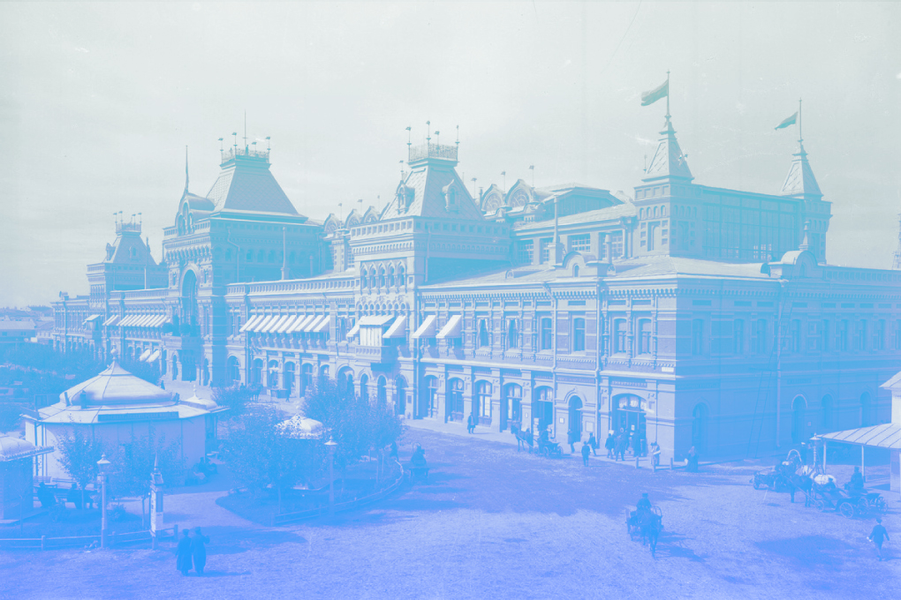

Всероссийская выставка в Нижнем Новгороде (1896)
XVI Всероссийская промышленная и художественная выставка была профинансирована императором Николаем II и проходила с 28 мая (9 июня) по 1 (13) октября 1896 года в Нижнем Новгороде, в районе Кунавино, где сейчас расположен «Парк им. 1-го мая». К открытию выставки в Нижнем Новгороде был пущен первый в России электрический трамвай, устроены фуникулеры — подъёмники, доставлявшие пассажиров с нижней части города в верхнюю (Кремлёвский и Похвалинский), выстроены здания городского драматического театра, окружного суда, биржи Волжско-Камского банка, гостиниц, открыта пароходная скоростная линия, связывающая верхнюю часть города с его заречной частью.
Описание
Для детального осмотра выставки, общей площадью около 25000 квадратных саженей, требовалось не менее недели. Количество посетителей составило примерно один миллион человек. В организации этой выставки принимали участие известные предприниматели: С. Т. Морозов был председателем ярмарочного комитета, С. И. Мамонтов заведовал одним из павильонов. Участниками выставки были отечественные предприниматели, и прежде всего подчеркивалось российское происхождение представленных товаров. Успех выставки обеспечивался целой системой мер, предпринятых русским правительством для стимулирования экономического развития страны.
Решение о проведении Всероссийской выставки в Нижнем Новгороде появилось не случайно. Снижение оборотов Нижегородской ярмарки, которая проводилась ежегодно, вызывало серьёзную озабоченность русского правительства. С не меньшей тревогой воспринималось и постепенное вытеснение отечественных хлебопроизводителей с традиционных европейских рынков. В то же время Нижний Новгород оставался «хлебной столицей» России, крупным торговым центром. Назрела необходимость организации специальных мероприятий, которые не только могли бы возродить интерес к «русскому хлебу» за границей, но и способствовали бы появлению новых товаров, внедрению новых технологий, освоению новых рынков.
Был подписан Указ Императора о проведении Всероссийской выставки в 1896 году, утверждены Положения о выставке и состав Особой комиссии под председательством С. Ю. Витте, в которую вошли представители различных министерств и ведомств. Разумеется, помимо сугубо экономических целей (способствовать достижению баланса между спросом и предложением, производством и потреблением) выставка преследовала и определенные политические цели. Именно поэтому среди посетителей выставки были и министры, и послы иностранных держав, и царская семья.
Выставка 1896 года в Нижнем Новгороде стала крупнейшей дореволюционной выставкой в России. Одновременно с выставкой был проведён Всероссийский промышленный съезд. На выставке были продемонстрированы лучшие достижения начавшегося промышленного подъёма: первая в мире гиперболоидная стальная сетчатая башня-оболочка и первые в мире стальные сетчатые висячие и сводообразные перекрытия-оболочки (8 павильонов выставки общей площадью более 25 тысяч квадратных метров, включая уникальную ротонду Шухова — круглый павильон с висячей стальной сетчатой оболочкой покрытия) конструкции В. Г. Шухова (патенты Российской империи № 1894, 1895, 1896 от 12 марта); первый в мире радиоприёмник (грозоотметчик) конструкции А. С. Попова; первый русский автомобиль конструкции Евгения Яковлева и Петра Фрезе; многие другие технические изобретения, технологии, художественные достижения.
Место для выставки было выбрано на левом берегу реки Оки, между главной линией Московско-Нижегородской железной дороги и лесом графа Шувалова, почти рядом с ярмаркой (в настоящее время на этой площади находится парк им. 1 Мая). Она занимала около 84 га. Для уменьшения строительных расходов из Москвы в Нижний Новгород было перенесено центральное здание, оставшееся после всероссийской выставки 1882 года.
Всех зданий и сооружений, возведённых по распоряжению министерства финансов — около 70. Павильонов частных лиц и учреждений — более 120. Императорский павильон, построенный по проекту профессора А. Н. Померанцева в русском стиле — с резными украшениями, после окончания выставки был подарен Нижнему Новгороду. Зал для собраний на 900 человек был построен профессором Л. Н. Бенуа, среднеазиатский отдел в мавританском стиле — по проекту профессора А. Н. Померанцева, павильон Крайнего Севера — архитектора Л. Н. Кекушева по эскизам К. Коровина. Ряд павильонов (Ярославской мануфактуры А. А. Карзинкина, фирм «Эйнем», Сергеева, Н. Н. Коншина, Товарищества Гарелина, Товарищества Шибаева и другие) были сооружены по проектам архитектора Ф. О. Шехтеля. Возведение и оформление главного павильона, а также проектирование павильонов Тверской и Никольской мануфактур, павильона «Товарищества Ф. Реддавей и К°» осуществлял архитектор В. А. Мазырин. Выдавались здания художественного отдела, департамента уделов, министерства путей сообщения, речного и морского торгового судоходства и т. д. Из частных павильонов обращало на себя внимание здание товарищества нефтяного производства братьев Нобель, с панорамами заводов и промыслов в городе Баку.
Выставочная территория была прорезана круговой электрической дорогой (около 3,7 км). Освещалась выставка электричеством. Для сообщения города с выставкой устроены были электрическая железная дорога, два элеватора и особые пароходные курсы. Для посетителей выставки были установлены 183 маршрута из разных городов России, по железным дорогам и водяным сообщениям, со значительной скидкой. На выставке читались лекции по разным предметам; в каждом отделе, в известные часы, давались объяснения. Во время выставки устроены были съезды торгово-промышленный (более 1 тысячи членов), овцеводов, пчеловодов, пожарный и др. Всех посетителей на выставке, в течение 125 дней, было 991 033, считая в том числе и бесплатных народных учителей, учеников, рабочих и проч. Для воспитанников учебных заведений и рабочих был устроен даровой проезд на выставку. На московской всероссийской выставке 1882 г. посетителей было 1 077 198 человек. Экспонентов в Н. Новгороде 9700, в Москве — 5318. Особенно широко были в Нижнем представлены отделы среднеазиатский, сибирский, крайнего севера (устроенный Московско-Яросл.-Архан. жел. дорогой).
Отделы и подотделы Выставки:
- Отдел I. Сельское хозяйство
- Отдел II. Коннозаводство и коневодство
- Отдел III. Домашние животные
- Отдел IV. Садоводство, плодоводство и огородничество
- Отдел V. Охотничьи, пушные и рыбные промыслы
- Отдел VI. Лесоводство и лесная технология
- Отдел VII. Горное дело и металлургия
- Отдел VIII. Изделия из волокнистых веществ
- Отдел IX. Производства фабрично-заводские и фабрично-ремесленные
- Отдел X. Художественно-промышленный
- Отдел XI. Кустарные промыслы
-
Отдел XII. Машинный и электротехнический
- Пожарный подотдел
- Отдел XIII. Сибирь; торговля России с Китаем и Японией
- Отдел XIV. Средняя Азия; торговля России с Персией
- Отдел XV. Военный
- Отдел XVI. Военно-морской
-
Отдел XVII. Строительное и инженерное дело, морское и речное торговое судоходство
- Пожарный подотдел
- Отдел XVIII. Художественный
-
Отдел XIX. Народное образование, метеорология, охранение народного здравия, благотворительность, подача помощи страждущим и спасение на водах
- Подотдел Министерства народного просвещения
- Подотдел Метеорологии
- Подотдел Санитарно-гигиенический
- Подотдел Благотворительных учреждений
- Подотдел Российского общества Красного Креста
- Подотдел Императорского Общества спасения на водах, состоящего под Высочайшим покровительством Её Императорского Величества Государыни Императрицы Марии Фёдоровны
- Отдел XX. Крайний Север
Всех наград присуждено экспертами 5318. Стоимость зданий выставки и других для неё расходов казны и частных лиц определяется не менее как в 50 млн руб. Литература о выставке очень обширна. Во время выставки издавалась специальная выставочная газета; министерство финансов издало по поводу выставки книгу «Производительные силы России», где даны очерки различных отраслей промышленности, торговли и т. д. Изданы были также описания фабрик, заводов, имений и проч.